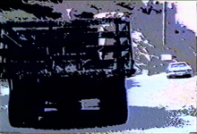

|
Video-Arte
por Benno Richard Mauler Lair y Emilio Mendoza |
Las
Tragedias Negras
"Venezuela es unos de los más grandes productores de petróleo del mundo
y nos hemos enriquecido por cien años contaminando al mundo entero y causando terribles accidentes:
Como venezolanos debemos todos ser ecológicos, esa es nuestra obligación de nacimiento con la Tierra." EM
"Venezuela es unos de los más grandes productores de petróleo del mundo
y nos hemos enriquecido por cien años contaminando al mundo entero y causando terribles accidentes:
Como venezolanos debemos todos ser ecológicos, esa es nuestra obligación de nacimiento con la Tierra." EM
Venezuela es un país sin memoria, olvidamos todo lo bueno y todo lo malo, vivimos el presente inconsecuente. Con el poder del arte, hacemos que ciertas tragedias de la industria del petróleo, devastadoras en vidas humanas, daños ecológicos y materiales que pasarían al olvido como objetos del consumo diario de noticias, se mantengan en memoria y nos hagan reflexionar, como seres conscientes en un bello y privilegiado país, que lo estamos destruyendo.
Los tres videos siguientes fueron realizados en conjunción creativa con el artista visual alemán Benno Richard Mauler Lair, e interpretan y se centran en los conceptos de la pieza Etnocidio de Emilio Mendoza, en grabación de la ODILA,1983, como si fuera un video-clip musical. Los tres videos utilizan material común así como tomas y personajes exclusivos para cada versión, haciéndose variaciones sobre un mismo tema, con diferencias en perspectiva, estructura y duración. A juicio de Mendoza, Aloha Tacoa resultó ser el mejor logrado, donde Ascuas es muy lento y largo aún con partes muy bellas. En Strike the Balance, más corto, el director Mauler utilizó diferente música además de Etnocidio, llevando a graves diferencias entre los dos artistas. En Strike the Balance también se incluyó tomas de bailarines de Coreoarte y de Carlos Orta, su gran coreógrafo.
Etnocidio expone musicalmente la opresión de una cultura y su gente por un agresor. Los videos utilizaron tomas reales de la localidad del accidente ocurrido en 1982, en la planta termo-eléctrica en Tacoa, edo. Vargas, donde murieron más de 200 personas, entre ellas bomberos y familias enteras, por las explosiones de enormes tanques de combustible que sorprendieron a las casas y a las brigadas de rescate con llamaradas volcánicas, quemándolos en el acto. La impunidad e indiferencia frente a tal desastre aún no han sido explicadas, sin causas ni culpables, efecto recurrente en nuestro país, donde la pobreza coexiste en contraste con los altos ejecutivos políticos y petroleros, champaña en mano, jugando al olvido.
Estas Tragedias Negras continuan, sin enterarnos de muchas, como en la misma planta de Tacoa en el 2013 producida "por un rayo." En el 2012 una explosión similar pero más grande, sucedió en la refinería de Amuay, edo. Falcón, y un año después, por presión de los medios de oposición se informó que la causa del desastre petrolero más grande de la historia había sido por un sabotaje de la oposición. Otra tragedia reciente en la refinería de El Palito pasó desapercibida, al estar el país saturado y hundido entre otras muchas malas noticias. Actualmente se trabaja en un video-arte sobre la tragedia del río Guarapiche.
Noticias y fotos - Tragedia de Tacoa, diciembre, 1982, y octubre, 2013
Noticias y fotos - Tragedia del río Guarapiche, febrero, 2012
Noticias y fotos - Tragedia de Amuay, agosto, 2012
Noticias y fotos - Incendio en El Palito, noviembre 10, 2013
El fotógrafo Benno Mauler llega a Venezuela con la compañía de teatro de Lindsay Kemp para el Festival Internacional de Teatro, 1983. Conoce a Mendoza a través de una amiga común, Eva Waldtschütz, y se apasiona con la ODILA, la Orquesta de Instrumentos Latinoamericanos que dirigía Mendoza en esos años. Le encanta a Venezuela, su gente y naturaleza, se interesa en sus problemas y realiza un levantamiento fotográfico extraordinario, aún sin editar. Después de algunos viajes juntos por el país y reconociendo el nivel artístico visual de este nuevo amigo, además de su locura y buena onda, Emilio Mendoza organiza la producción de grabaciones de videos en diferentes localidades con personal de la ODILA como actores, y equipo técnico de INIDEF (ahora Casa de la Diversidad Cultural, Caracas).
Los videos, originalmente en U-Matic 3/4", fueron digitalizados gentilmente en el ZKM, Zentrum für Kunst und Medientechnologie, Karlsruhe, Alemania, y se encuentran en sus archivos bajo los códigos bajos sus títulos.
ALOHA TACOA (1985) Ver datos y fotos

- I Festival de Cine de los Altos Mirandinos, Teatro de la Alcaldía Los Salias, San Antonio de los Altos, 18/10/2008.
- Primer Festival de TV y Video, Fundarte
(Finalista), Teatro Teresa Carreño, Caracas, 31/1/1986.
Fue escogido como el ganador, pero en el último minuto fue
anulada su premiación por no poderse mostrar en televisión
en vivo las imágenes del desastre de Tacoa que se incluyen
en el video. El director Benno, enfurecido, se llevó el
original y mantuvo la película sin mostrar por 22 años
hasta que en el 2008, Mendoza fue hasta su casa en Munich
y se trajo el casete original envejecido U-Matic para
hacer una copia en el archivo del ZKM.
Sólo en octubre, 2013, Mauler autorizó su publicación en
YouTube.
STRIKE THE BALANCE (1988) Ver datos y fotos
(Código ZKM: 2008000365_0000_lair_richard_strike-the-balance_venezuela_1988_umatic.mov)
 Ver fragmento mp4
Ver fragmento mp4- Video Fest '89, MedienOperative, Berlin, Alemania,
1989.
- Europäisches Film und Fernseh Jahr, Gasteig, Blackbox Saal, Munich, Alemania, 07/1988.
ASCUAS (1984) Ver datos y fotos
(Código ZKM: 2008000366_0000_laira_veno_ascuas_NTSC_Umatic.mov)
 Ver fragmento mp4
- I Festival Internacional de Cinema, TV e Video do Rio de Janeiro, Brasil, 19-24/11/1984.